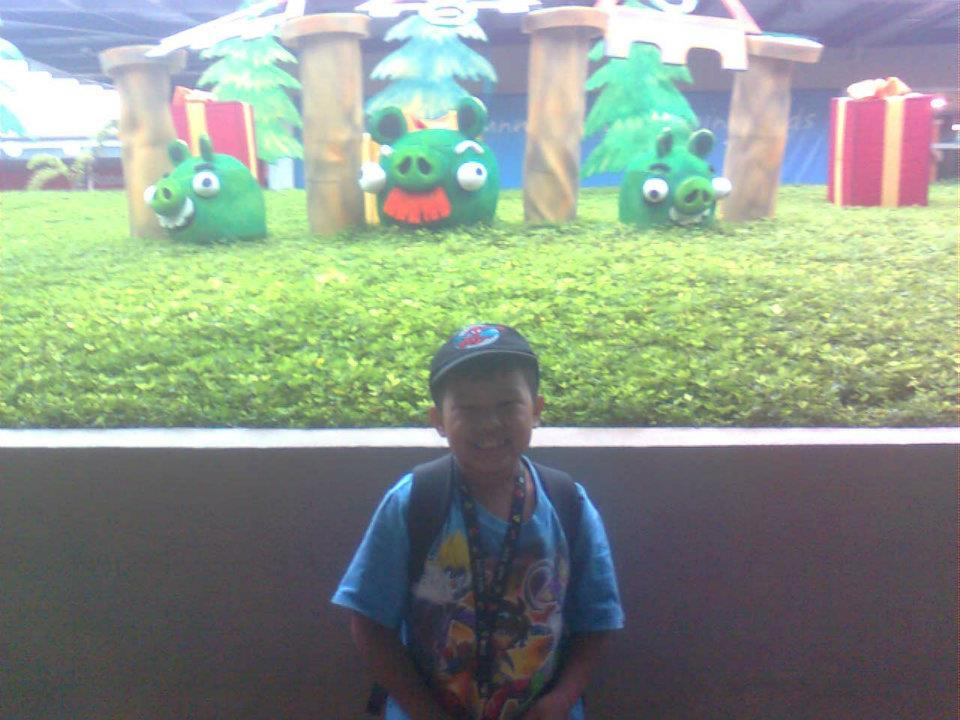

greetings!
my name is "Elijah Wudz Baldevia Bitacura", 20 years old and i am a returnee in HCDC with the course of BSIT. my father's name is "Darius" and my mother's name is "Rosemary", i am the eldest and my sister's name is "Aliyah". i currently live in "Deca Homes Tigatto, Buhangin, Davao City".
i currently work as a social media manager in a food business company.
i choose BSIT because i wanted to create an impact, something that'll be useful in the future. i wanted to show how my capabilities and idea can affect the future world.
